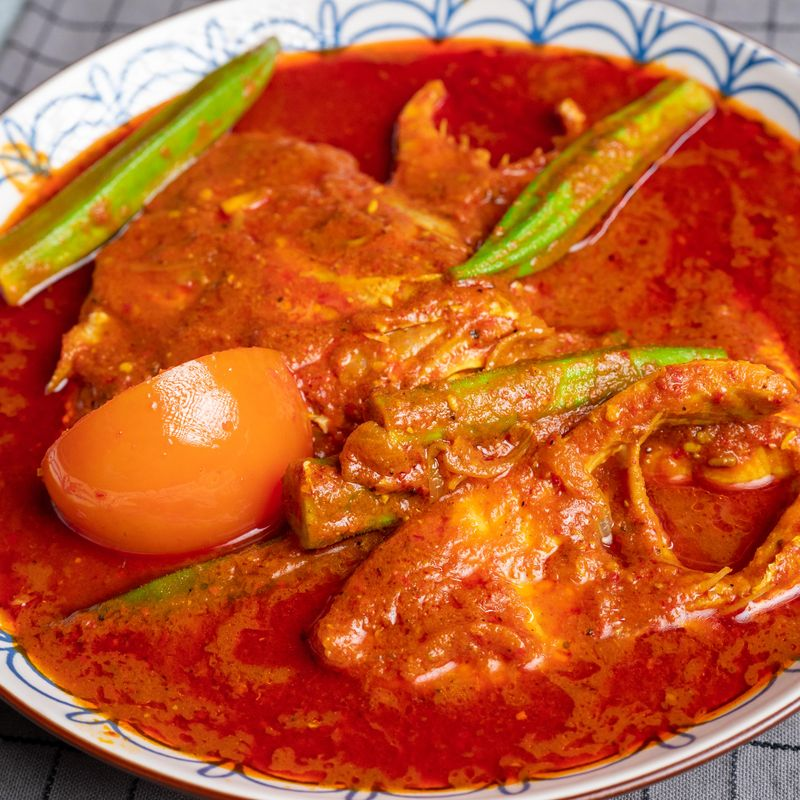

Asam Pedas Original Melaka

Masa Penyediaan: 20 minit
Masa Memasak: 15-20 minit
Jumlah Hidangan: 3-4 orang makan
Bahan-Bahan
- 1 biji bawang besar
- 1 ulas bawang putih
- 10 -15 biji bawang merah
- 3 ketul kunyit hidup
- 1 inci halia
- 1 biji tomato
- Bendi
- 5/6 helai daun limau purut
- Cili Kering
- 1 ekor/ 900g ikan merah
- 1 sb biji ketumbar
- 1/2 sb jintan manis
- 1/2 sb jintan putih
- 1/2 sb biji lada hitam
- 1/2 sb biji halba
- 1 inci / 1/2 sb belacan bakar
- 3/4 cawan minyak masak
- 1 cawan jus asam jawa
- Garam secukup rasa
- 2-3 cawan air (untuk kuah)
- Serbuk perasa (pilihan)
Cara Penyediaan
- Hiris nipis bawang besar dan bawang putih (untuk tumisan).
- Potong kasar bawang merah kecil, bawang putih, kunyit hidup dan halia (untuk kisar).
- Tomato belah 4, bendi trim bahagian kepala dan ekor dan daun limau nipis buang tangkai dan koyak daun.
- Cili kering, gunting, rebus sampai mendidih, bilas dan keluarkan biji.
- Masukkan dalam blender cili kering rebus, belacan bakar, bahan potong kasar, biji ketumbar, jintan manis,
jintan putih, biji lada hitam dan air. Kisar sampai halus.
- Panaskan minyak, tumis biji halba sampai naik aroma. Kemudian masukkan bawang besar dan bawang putih, tumis
sampai bawang lembut.
- Masukkan bahan kisar halus dan masak atas api sederhana sampai pecah minyak.
- Tambah daun limau purut, air, garam dan sambung tumis sampai garing.
- Masukkan air asam jawa, air, ikan dan masak sampai mendidih.
- Tambah garam, serbuk seasoning, tomato dan bendi.